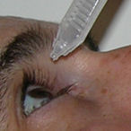
Маргарет Макдональд, доктор медицины:"После операции LASIK примерно у половины моих пациентов были жалобы на сухость глаз, и примерно у половины из них симптомы были серьезными".; RefractiveEyecare.com Декабрь 2005 года
Сухость глаз является наиболее распространенным осложнением LASIK. Практически у всех пациентов после LASIK возникает сухость в глазах. Через шесть месяцев после LASIK примерно у 20% пациентов в Клинические испытания, требуемые FDA продолжают поступать сообщения о сухости в глазах. Другие исследования показывают, что от 30% до 50% пациентов с LASIK испытывают хроническую сухость в глазах, которая сохраняется в течение более одного года после операции. FDA предупреждает, что у пациентов может развиться " тяжелый синдром сухого глаза "который"; может быть постоянным ". Источник Когда хирурги LASIK указывают на частоту осложнений в 1% или менее, они полностью игнорируют это потенциально изнурительное осложнение.
Пациенты, страдающие хронической сухостью глаз после LASIK, должны отправьте отчет о медицинском наблюдении с Управлением по санитарному надзору за качеством пищевых продуктов и медикаментов в режиме онлайн. Кроме того, вы можете позвонить в Управление по санитарному надзору за качеством пищевых продуктов и медикаментов по телефону 1-800-FDA-1088, чтобы сообщить об этом по телефону. бумажный бланк и либо отправьте его по факсу на номер 1-800-FDA-0178, либо отправьте по почте на адрес, указанный внизу страницы 3, либо загрузите Мобильное приложение MedWatcher для сообщения о проблемах с LASIK в FDA с помощью смартфона или планшета. Ознакомьтесь с образцом Отчеты о травмах, полученных с помощью LASIK в настоящее время находится на рассмотрении в FDA.
"Сухость глаз определялась как одновременное наличие симптомов и, по крайней мере, одного признака. Оценка по тесту Ширмера <5 мм, время разрыва слезной пленки > 10 секунд, окрашивание бенгальской розой > 3 и окрашивание флуоресцеином > 1 были признаны показательными признаками."; Источник: Краткие новости. EyeWorld. Январь 2019. Стр. 72.
Если вы страдаете от сухости глаз или других осложнений после лазерной офтальмохирургии, мы приглашаем вас присоединяйтесь к обсуждению на FaceBook
Фотографии суровых сухость глаз после операции LASIK любезно предоставлено доктором Эдвардом Бошником. Фотографии были сделаны с помощью щелевой лампы (био-микроскопа) после нанесения флуоресцеиновое окрашивание в глаз.
Глобальные новости 16x9 сообщают о том, что Даниэль Муфлье страдает от синдрома сухого глаза, вызванного LASIK, - 4.02.2013
Каждый день Даниэлю Муфлие напоминают о том, что он считает самой большой ошибкой в своей жизни.
"Ад. Это был ад", - говорит он. "Мне пришлось заново учиться жить".;
Дэниел перенес лазерную операцию на глазу в июле 2011 года, и с тех пор он страдает от болезненной сухости глаз.
Читайте об этом в Глобальных новостях: Глобальные новости | Лазерный глаз .
Пациент LASIK, Джо Тай, о болезни сухого глаза LASIK
На фотографии слева внизу показан глаз пациента, перенесшего операцию LASIK 4 года назад. Темные пятна, обозначенные красной стрелкой, являются сухими пятнами на роговице. Белая стрелка указывает на край лоскута LASIK. На следующем снимке тот же глаз показан через 2 секунды (без моргания), что демонстрирует, как быстро разрушается слезная пленка на глазу. Нажмите на фотографии, чтобы увеличить.
Маленькие точечные зеленые пятна или скопления пятен представляют собой эпителиальные клетки, которых больше нет. Пространство, которое когда -то занимала живая ткань, по сути, занято красителем, который был закапан в глаз. Зелено-желтый круг по периферии роговицы - это край лоскута LASIK, который хорошо виден на левом снимке во 2-м ряду. Он окрашен в зелено-желтый цвет, потому что граница раздела все еще открыта, как рана, которая никогда полностью не заживает.
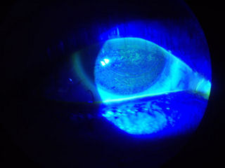
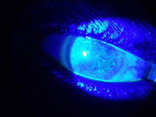
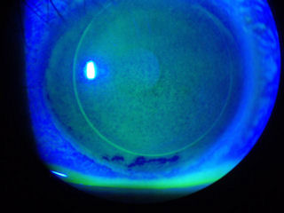
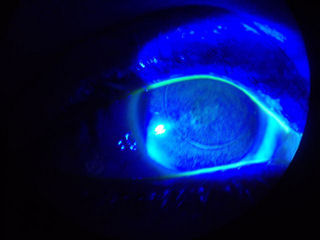
На снимке ниже изображена роговица пациента, которому в 2006 году была проведена операция LASIK. Участки, которые выглядят как темные пятна, - это места, где на роговице отсутствуют слезы. Пациент страдает от боли и нечеткого зрения. (Белое пятно - это отражение лампы микроскопа).
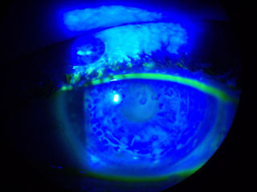
Слезная пленка на глазу после операции LASIK распадается
На этой серии из 4 фотографий видно, как слезная пленка "распадается" на глазу после операции LASIK. Первая фотография была сделана сразу после того, как пациент моргнул. Обратите внимание, что глаз на мгновение покрывается защитной слезной пленкой. Вторая фотография была сделана через 2-3 секунды после моргания. Темно-синие отметины - это участки, где слезная пленка начала разрушаться, оставляя глаз незащищенным от воздействия окружающей среды. Третья фотография сделана через 5 секунд, а последняя - через 7-8 секунд. (Обратите внимание на край лоскута LASIK на фотографиях.)
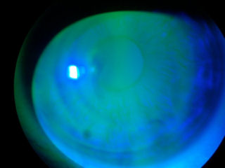
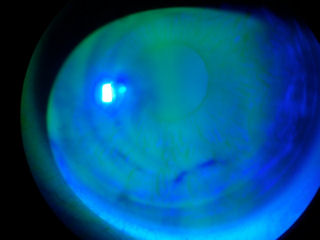
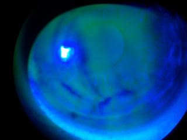
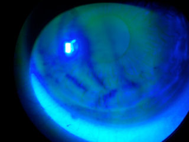
На фотографии ниже показана роговица пациента, у которого была РК (радиальная кератотомия) пятнадцать лет назад, а затем девять лет назад была проведена операция LASIK. На снимке видны разрезы RK. Красная стрелка указывает на край лоскута LASIK. Как и разрезы RK, лоскут LASIK никогда не заживает полностью. Желтая стрелка указывает на окрашивание эпителиальных клеток роговицы, которые больше не жизнеспособны из-за синдрома сухого глаза после операции LASIK.
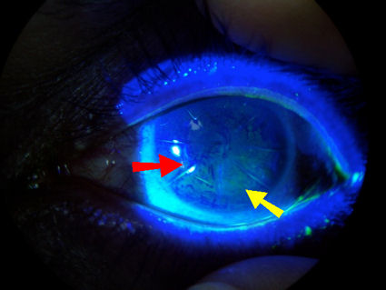
Частота возникновения сухости в глазах после операции LASIK
Тода И. Лазерная терапия и глазная поверхность. Роговица. 2008, 27 сентября, Дополнение 1: S70-6.
"Сухость глаз - одно из наиболее распространенных осложнений после операции LASIK, от которого страдают примерно 50% пациентов в
через 1 неделю после операции, 40% - через 1 месяц и 20%-40% - через 6 месяцев. Хотя сухость глаз после операции LASIK обычно
временно, некоторые пациенты жалуются на серьезные симптомы, которые могут негативно повлиять на их удовлетворенность результатом."
В обзоре 12 лазеров, одобренных FDA для LASIK в 2007 году, содержатся выводы:
"Примерно у 20% пациентов наблюдались симптомы сухости которые были хуже или значительно хуже, чем предоперационная сухость".(Данные за шесть месяцев после операции).
Бейли, доктор медицинских наук, Цадник К. Результаты лечения близорукости с помощью лазеров, одобренных FDA. Роговица. 2007, апрель;26(3):246-54.
31,2% пациентов, участвовавших в клиническом исследовании Bausch & Lomb Zyoptix FDA, сообщили об усилении или значительно более выраженной сухости глаз через шесть месяцев после LASIK. Источник (страница 17)
27,6% пациентов, участвовавших в клиническом исследовании FDA по эксимерному лазеру Mel 80, сообщили об усилении сухости глаз через шесть месяцев после LASIK.
Источник (страница 32)
Мистер Шоджа, мистер Бешарати. Сухость глаз после операции LASIK по поводу миопии: частота и факторы риска. Eur J Ophthalmol. Январь-февраль 2007;17(1):1-6:
"В 20 процентах случаев из 190 глаз хроническая сухость глаз сохранялась 6 месяцев и более после того, как была диагностирована процедура LASIK".;
В 2006 году исследователи из медицинского колледжа Бейлора сообщили:
"Сухость глаз часто возникает после операции LASIK у пациентов, у которых в анамнезе не было симптомов сухости глаз... Частота возникновения синдрома сухого глаза постепенно снижалась в течение периода наблюдения в обеих группах до 36,36% в целом и 41,18% в группе с улучшенным зрением через 6 месяцев."
Am J Ophthalmol. Март 2006; 141(3):438-45.
EuroTimes, Том 13, выпуск 5, май 2008
Уолтер Секундо, доктор медицины:"Хотя в большинстве случаев со временем состояние улучшалось, в 20 процентах случаев сухость глаз сохранялась более шести месяцев после операции".; Ссылка на статью
Офтальмологический менеджмент, сентябрь 2004 г.
Эрик Донненфельд, доктор медицинских наук:"Yu и соавт. сообщили, что 60% пациентов испытывали сухость глаз через 1 месяц после операции LASIK, а Hovanesian и соавт. сообщили, что 50% пациентов испытывали симптомы сухости глаз через 6 месяцев."; Ссылка на статью
Врач утверждает, что сухость глаз после операции LASIK не является временным заболеванием
Зрительный мир
Синдром сухого глаза: связь с LASIK?
Сентябрь 2005 года
Из статьи: Доктор Ценг и его коллеги провели ретроспективное годичное исследование 17 пациентов (34 глаза), все из которых, кроме одного, жаловались на постоянную сухость глаз более чем через год после получения LASIK, но до операции у них не было симптомов... Доктор Ценг сказал, что, таким образом, он и его коллеги пришли к выводу, что сухость глаз после операции LASIK не является временным осложнением. "Это стойкое и длительное заболевание", - сказал он.
Ребекка Петрис, основательница компании Dry Eye Zone: "Я просто переполнена этой потребностью".
На слушаниях FDA в апреле 2008 года Ребекка Петрис обратилась к офтальмологическому сообществу с призывом работать с группами пациентов над поиском решений проблемы сухости глаз после операции LASIK.
Сухость глаз после операции LASIK влияет на качество жизни
6/6/2008 Пациент ФРК рассказывает о попытке самоубийства на доске обсуждений "сухой глаз":
"Я знаю из комментариев в других местах, что некоторые из вас не понимают, как человек может дойти до такого состояния, даже учитывая, насколько безжалостна и ужасна боль в глазах и насколько отупляющим может стать недосыпание...
Мне действительно больно, и я не знаю, как справиться с этим".; Ссылка
16.03.2008 Пациент LASIK покончил с собой, оставив предсмертную записку, в которой обвинил LASIK:
"Сухие глаза; не могу разжечь камин, не могу стоять перед кондиционером... Операция на глазах отняла у меня жизнь. Зрение искажено болью... хроническая сухость глаз... невыносима!!!"; Предсмертная записка (страницы 6-8). Видео по теме
Пациент LASIK с горящими сухими глазами совершает самоубийство:
Из статьи:"Я не знал, что у него так сильно горели глаза из-за операции Lasik или звенело в ушах". Терапевт доктор Джоэл Руни говорит, что такое сочетание для мужчины в таком возрасте может быть смертельным... Теперь у его семьи есть его воспоминания и его труды, которые помогли им понять его страдания. "Он сказал, что это было похоже на рак, на неизлечимую болезнь, с которой ты просто не мог справиться, и боль была слишком сильной, чтобы ее преодолеть, он больше не мог так жить", - говорит его брат. Источник . Видео по теме (начало в 1:40)
В августе 2002 года пациент LASIK Дэвид Шелл давал показания перед комиссией FDA по офтальмологическим устройствам:
“Мой синдром сухого глаза с помощью LASIK не является незначительной проблемой, как это преуменьшают некоторые офтальмологи. Это инвалидность. По моим оценкам, я слеп примерно в 10% случаев из-за того, что мои глаза закрыты из-за боли. На момент операции я было сообщено, что только у небольшого числа пациентов возникают осложнения в результате этой процедуры. Существуют существенные доказательства того, что этот пагубный побочный эффект является относительно распространенным явлением.
Роберт Латкани, доктор медицины.:
"У меня есть пациенты со всего мира. Они в отчаянии и взывают о помощи", - сказал он. "Это почти пугает. Я много раз слышал, как люди говорили, что хотят покончить с собой. Для окулиста [сухость глаз] - это просто неприятность, [когда] на самом деле эти пациенты действительно страдают. ” Источник
Достаточно, чтобы вызвать слезы на ваших глазах, автор Джуди Форман
К синдрому сухого глаза "часто относятся скептически, потому что он обычно не приводит к слепоте", - говорит доктор Джанин Смит, заместитель клинического директора Национального глазного института в Бетесде, штат Мэриленд. - Но он может ухудшить качество жизни. "Вам приходится все время моргать. Вы не можете держать глаза открытыми. Если у вас есть работа, ее трудно выполнять".;..."Сухость глаз никого не убивает, но может вызвать у некоторых людей желание покончить с собой", - добавляет доктор Энтони Олдаве, директор отделения роговичной и рефракционной хирургии в Глазном институте Жюля Штейна в Калифорнийском университете в Лос-Анджелесе. Это также может привести к невозможности ношения контактных линз. Источник
Личный опыт пациента после операции LASIK с сухостью глаз:
"Я уже более двух лет (декабрь 2000) не делала операцию lasik, и мои глаза по-прежнему горят, красные, налитые кровью, раздраженные и болезненные, и я не знаю, что делать. Кажется, чем больше капель я закапываю в глаза, тем сильнее они становятся жгучими, раздраженными и болезненными".; Подробнее
Жизнь с LASIK, автор : майор Эрик Дж. Рупард, доктор медицины - 21 апреля 2008 г.
Я военный врач, в настоящее время служу в войсковой медицинской клинике в Ираке, где ухаживаю за больными и ранеными солдатами и морскими пехотинцами. Несмотря на то, что я проходил действительную военную службу в течение всего периода операции "Свобода Ирака" и все это время добровольно участвовал в боевых действиях в зоне боевых действий, это мое первое назначение. До этого времени я не мог работать по медицинским показаниям из-за тяжелого синдрома сухого глаза, вызванного операцией LASIK. Еще больше »
На фотографии ниже представлена роговица пациентки, перенесшей операцию LASIK по поводу миопии высокой степени в 2002 году. (Яркое белое пятно - это отражение света от микроскопа.) По периферии роговицы виден край лоскута. Необычный узор из круговых зигзагообразных линий представляет собой форму дистрофии роговицы, известную как дистрофия роговицы по отпечатку пальца на карте Это микроцист и выступы внутри и под эпителием роговицы. Однако обратите внимание, что необычный рисунок не виден за пределами лоскута LASIK. Темно-синие пятна внизу фотографии представляют собой участки роговицы, на которых отсутствует слезная пленка. Пациентка страдает хронической сухостью глаз и очень дальнозорка, поэтому ей необходимо обязательно носить очки. В настоящее время она носит жесткие контактные линзы, которые закрывают роговицу и прилегают к склере (белку глаза). За этой пациенткой необходимо тщательно наблюдать.
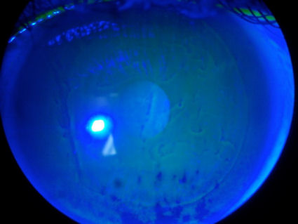
Мэтт Янг. Lenticule может победить LASIK в борьбе с синдромом сухого глаза. EyeWorld, февраль 2012 .
Из статьи: Возможно, самое важное, что он обнаружил, что синдром сухого глаза по методу LASIK - это целый спектр болезненных состояний, которые он разделил на четыре категории: 1) невропатическая эпителиопатия, 2) нестабильность слезной жидкости, 3) реальный дефицит слезной жидкости из-за повреждения нервов, 4) и невропатическая боль (фантомная боль). Доктор Туиску обнаружил, что у большинства пациентов через 6-12 месяцев после LASIK улучшается состояние в отношении первых трех категорий синдрома сухого глаза. "Но невропатическая боль более сложна", - сказал доктор Туиску. Регенерация нервов может занять 5 лет, и нервы восстанавливаются иначе, чем раньше, что приводит к тому, что доктор Туиску называет "аберрантными нервными волокнами". "По мере того, как нервные волокна врастают обратно в лоскут, они разветвляются", - сказал доктор Рейнштейн. "Нервных окончаний, как правило, больше, чем было изначально, - это двойные или тройные нервные окончания. Теперь легкое дуновение ветра на глаза будет ощущаться как дуновение в три раза сильнее, вызывая ощущение, что глаза очень сухие ."
Выдержки из рецензируемых журнальных статей
"Симптомы сухости глаз могут существенно повлиять на качество жизни, что подтверждается несколькими проверенными инструментами обследования. О психологическом воздействии этого хронического заболевания свидетельствует оценка полезности готовности пациентов променять годы жизни на возможность избавиться от сухости глаз, которая показала, что польза от умеренной степени сухости глаз была аналогична пользе от стенокардии средней степени тяжести".;
Источник: Квинто Г.Г., Камачо У., Беренс А. Пострефракционная хирургия сухого глаза. Обзор офтальмологии. Июль 2008 г.;19(4):335-41.
"Важно понимать, что эти люди могут страдать от "фантомной боли в глазах", которая не имеет психиатрической или "центральной болевой" этиологии. Недавнее обсуждение психической депрессии вплоть до самоубийства после LASIK предполагает, что нам нужно уделять больше внимания проблеме боли после этой терапии и анализировать, связана ли эта проблема с нереалистичными ожиданиями, плохими результатами или развитием периферической невропатической боли.";
Источник: Туиску И., Терво Т., Бельмонте С. Рефракционная хирургия, 2008;24:772.
Сообщение о сухости глаз после операции LASIK поступило в FDA:
Около 6 лет назад я перенесла лазерную операцию на глазах в [отредактировано FDA]. Я страдаю от хронической сухости глаз, при которой мне необходимо использовать качественные глазные капли 10 раз в день. До процедуры у меня не было ни малейшей сухости в глазах. Источник
Мне сделали двустороннюю операцию lasik по поводу близорукости и астигматизма, которую провел один из ведущих офтальмологических хирургов в стране. У меня остались остаточная аномалия рефракции и астигматизм, которые требовали постоянного ношения очков. Что еще хуже, в результате операции у меня возникло тяжелое состояние сухости глаз, которое сделало большинство повседневных действий трудными и болезненными, а эпителий моей роговицы находился в поврежденном состоянии, которое один врач охарактеризовал как "хрупкое". "единственным решением, которое принесло существенное облегчение, было прижигание всех четырех точек. Но из-за неоднократных попыток частичного прижигания и из-за того, что мои полностью прижженные пункции продолжали самопроизвольно открываться, мне в конечном итоге пришлось навсегда закрыть все четыре пункции с помощью прижигания-наложения швов-прижигания. В общей сложности я перенесла двадцать восемь процедур прижигания. Это тяжелое испытание привело к восемнадцати месяцам хронической сильной боли, которая спровоцировала тяжелую и опасную депрессию. Событие сегодня, более шести лет спустя, мои глаза все еще иногда ощущают болезненную сухость, а их способность к заживлению даже после незначительных травм существенно снижена. Название клиники, город и штат - не имеет значения. Все операции lasik повреждают роговицу. Ты это знаешь. Источник
Я перенесла операцию LASIK в [удалено] 2010 году. Врач объяснил мне, что после процедуры у меня будут сухие глаза в течение 6 месяцев. Прошло уже около 18 месяцев после операции, а у меня все еще хроническая сухость глаз. Я закапываю в глаза смазывающие глазные капли по крайней мере несколько раз в день. Когда я сообщила об этом врачу во время моего 12-месячного обследования, она ответила, что, вероятно, у меня всегда была хроническая сухость глаз, просто сейчас я замечаю это чаще. До этой операции у меня никогда не было проблем с сухостью глаз. Источник
Я пишу вам, чтобы дополнить растущее число сообщений о долгосрочных побочных эффектах после операции на глазу lasik. В 2002 году я прошел процедуру lasik... Я невролог и, вероятно, должен был бы знать это лучше, но полагал, что процесс получения согласия будет аналогичен процедуре проведения операций в [удалено]. Хотя я допускал небольшой риск нарушения зрения (ореолы вокруг глаз и т.д.), ни разу не упоминалось о риске постоянной сухости глаз. Я страдал от сильной болезненной сухости глаз, потребовавшей точечной окклюзии сразу после операции, которая продолжалась около 3 месяцев. У меня не было в анамнезе случаев сухости глаз и никаких факторов риска - я мужчина и в остальном здоров, не принимаю лекарств... Однако в течение года у меня постоянно наблюдалась сильная боль от сухости глаз, которая была невыносимой. Я занимаюсь медициной, поэтому посещал множество офтальмологов и пробовал все обычные методы лечения, но безуспешно - свечи/ капли / компрессы / омега-3/стероидные капли и т.д. Симптомы ухудшили качество моей жизни в то время, когда я должен был наслаждаться новой семьей и успешной карьерой. Вместо этого у меня началась клиническая депрессия, требующая высоких доз антидепрессантов - при отсутствии каких-либо депрессий в анамнезе - из-за хронической боли в глазах. Я был близок к самоубийству из-за обычных проблем - вины, гнева, боли, отчаяния - и в настоящее время не представляю, как смогу продолжать работать еще долго... Подробнее
В 2001 году мне была проведена операция LASIK, сначала на одном глазу, а затем, неделю спустя, на другом глазу, в клинике [удалено]. С тех пор я страдаю от сухости глаз, которая варьируется от легкой до сильной. Несмотря на то, что я пробовал точечные пробки, ежедневные горячие компрессы и терапию доксициклином, мои мейбомиевы железы так и не вернулись к нормальной функции. Конечно, с тех пор я узнал, что это считается "незначительным" побочным эффектом LASIK, скорее всего, из-за необратимого повреждения нервов, вызванного микрокератомом (Hansatome) и эксимерным лазером (VISX), которые ваше агентство одобрило для медицинских целей, не требующих медицинского вмешательства. Подробнее
"С тех пор у меня было 3 эрозии роговицы. На ночь мне приходится смазывать глаза густым гелем, чтобы они не пересыхали, что приводит к повторной эрозии роговицы. Я пробовала капли, лекарства -рестазис, пищевые добавки - все это приносит минимальное облегчение. Я установила дома увлажнитель воздуха, чтобы еще больше облегчить дискомфорт. Хотя у меня зрение 20/20, я бы с удовольствием вернулась к ношению очков, чтобы облегчить это состояние!"; Источник
Мне сказали, что я являюсь кандидатом на операцию lasik, но я не была достаточно хорошо информирована об этом, воспользовалась рекомендацией своего врача и сделала операцию. Я страдаю каждый день, просыпаюсь посреди ночи и с трудом открываю глаза. Это очень больно. Я пью воду из бутылочек с искусственными слезами. О многом, о многом сожалею. Источник
"Я продолжала обращаться в клинику, где проводилась операция, и получила следующие рекомендации: ни одна из них не помогла. Рекомендовано [использовать] все доступные на рынке "капли". Не включайте дома потолочные вентиляторы. На ночь заклеивайте глаза пластырем. Не выходите на солнце. Бросьте курить. Рестасис - применял в течение 4 месяцев, но мне сказали прекратить, потому что это не помогло. Теперь мне советуют вернуться к лечению, и что для получения результатов потребуется до 2 лет. Были вставлены точечные пробки. Не выходите на улицу и не допускайте попадания воздуха в глаза. Принимайте таблетки с рыбьим жиром. Принимайте таблетки с льняным маслом. Ограничьте время, которое я провожу за компьютером. Я работаю в компании, занимающейся разработкой программного обеспечения." Источник
"В начале 2006 года я перенес операцию на глазу lasik (это не точная дата), слава богу, у меня нет проблем со зрением, но у меня есть постоянное расстройство сухости глаз. Временами синдром сухого глаза становится невыносимым, он очень болезненный, и у меня начинаются головные боли, это выводит из строя, потому что у меня много проблем с работой в течение всего дня, потому что вентиляция и ветер, попадающие в мои глаза, делают их очень сухими, а затем причиняют боль. Это всегда с нами и никогда не проходит, это навсегда. Я постоянно пользуюсь каплями, и у меня все четыре точечные пробки закупорены, но они все равно сухие. Когда появляются головные боли, это выводит меня из строя и мешает моей жизни. Мне просто трудно продолжать нормальную жизнь с этим заболеванием, связанным с сухостью глаз, оно никогда не проходит. Если бы я знала, что это случится, я бы вообще не стала делать операцию lasik, я была бы намного счастливее со своими очками." Источник
"В 2005 году мне сделали операцию lasik на обоих глазах... Мне вручили бланк моего информированного согласия со словами "прочтите это, но пусть это вас не пугает, такого никогда не бывает. "сразу после операции у меня начались боли в обоих глазах из-за сильной сухости глаз... Я посетила более 10 врачей, испробовала большинство традиционных методов лечения сухости глаз и потратила тысячи долларов на то, чтобы избавиться от боли и дискомфорта, связанных с сухостью глаз... Симптомы сухости глаз повлияли на все аспекты моей жизни и влияют на меня каждый час бодрствования. Первый год после операции был настоящей пыткой. Я страдала от тяжелой депрессии и приступов паники из-за физической боли и чувства вины, которые я испытывала из-за того, что решила пройти процедуру lasik. У меня никогда не было проблем с тревогой или депрессией до того, как я получила результаты lasik. 15-минутная процедура, которая должна была облегчить мою жизнь, теперь значительно ухудшила качество моей жизни и усложнила ее больше, чем я могла себе представить. Я всю жизнь буду страдать от боли в глазах и других проблем из-за результатов моей операции lasik".; Источник
"Я перенесла операцию lasik, и это в значительной степени ухудшило качество моей жизни. Сейчас я страдаю от чрезвычайно болезненного синдрома сухого глаза. До операции lasik я даже не знала, что такое синдром сухого глаза. Я думал, что процент осложнений очень, очень мал, а теперь я читаю, что число осложнений, связанных с сухостью глаз, огромно. Я думаю, что эта операция - преступление против тех из нас, кто считает ее чудом, а потом обнаруживает, что наша жизнь разрушена болью." Источник
***
Еще сотни сообщений о сильной сухости глаз после LASIK можно просмотреть на веб-сайте FDA по этому адресу. Ссылка . В поле код продукта введите Внешние ЗОНЫ при травмах, связанных с лазером, или ННО при повреждениях, связанных с применением микрокератома. Для интралазного (Intra-LASIK, iLASIK, безлопастного LASIK, полностью лазерного LASIK) типа "ИнтраЛаза" в поле название бренда. Используйте функцию "Диапазон дат", чтобы настроить поиск.
Сообщите о хронической сухости глаз после операции LASIK в Управление по санитарному надзору за качеством пищевых продуктов и медикаментов по этой ссылке: Медицинский дозор
Присмотритесь повнимательнее, прежде чем искать 20/20, Автор Дэвид Моррилл, 8.07.2008
Из статьи: У Лойда Ханнелла из Уолнат-Крика был один из самых тяжелых случаев. В 2005 году у Ханнелла были проблемы со зрением, и он решил сделать операцию Lasik. По его словам, то, что начиналось как попытка исправить проблему со зрением, превратилось в "кошмар наяву". Процедура прошла не так, как планировалось, и в течение нескольких лет боль была невыносимой. В какой-то момент он сказал, что ему показалось, будто ему прямо в глаза плеснули кислотой. Сегодня его проблема уже не так серьезна, как раньше, но все равно не идеальна. "Через несколько минут после пробуждения и до тех пор, пока я не закрою глаза ночью, у меня возникает покалывание, жжение, пульсация и боль, а иногда и ощущение инородного тела в глазах", - сказал он. "Я собрал огромную коробку с лекарствами, связанными с моей операцией и ее катастрофическими последствиями".;
Люди, страдающие от сухости глаз, проливают много слез - The San Diego Union-Tribune, 10/4/2005
Из статьи: Филлис Нэпп из Каламазу, штат Мичиган, ежедневно часами соблюдает сложный режим ухода за своими сухими глазами... Лечение этого заболевания, технически известного как синдром сухого глаза, включает в себя капли, мази, запотевающие средства, закупоривающие протоки, компрессы для глаз, скрабы для век, очки, удерживающие влагу, и пищевые добавки... Филлис Нэпп впервые почувствовала это в начале 2000 года, примерно через месяц после операции LASIK по коррекции зрения. "Что-то было не так", - сказала Нэпп. "Мои глаза постоянно горели. Врач просто сказал, что я все еще выздоравливаю." Но месяцы и годы спустя ее глаза становились все более сухими. Теперь на их поверхности появились эрозии. "Сухость глаз во многом ухудшает ваше зрение, если оно тяжелое, а у меня именно такое", - сказала она.
Примечание редактора: С прискорбием сообщаю, что Филлис Нэпп скончалась 28 апреля 2013 года.
Что вызывает сухость глаз после LASIK?
Слезная пленка состоит из трех слоев: наружного, маслянистого (липидного) слоя, который не дает слезам испаряться слишком быстро и помогает слезам оставаться на глазу; среднего (водного) слоя, который питает роговицу и конъюнктиву; и нижнего (муцинового) слоя, который помогает распределять водный слой по всему глазу. следите за тем, чтобы глаза оставались влажными. Источник
Исследования указывают на повреждение нервов роговицы как на наиболее вероятную причину сухости глаз после операции LASIK. Нервы роговицы, которые играют жизненно важную роль в образовании слезы, повреждаются, когда лоскут разрезается и удаляется лазером. Исследование, проведенное Кальвилло и соавторами в клинике Майо в 2004 году, показало, что через три года после операции LASIK нервы роговицы полностью не восстановились.
Некоторые исследователи предполагают, что повреждение роговичного нерва может также нарушить рефлексы, управляющие морганием век и секрецией жиров (мейбума) из век, которые контролируют испарение слез.
К другим факторам, которые могут способствовать сухости глаз после LASIK, относятся повреждение бокаловидных клеток конъюнктивы всасывающим кольцом, что ухудшает слой муцина слезной пленки, и уплощение центральной части роговицы после LASIK, что приводит к недостаточному увлажнению и просветлению слез, когда веки перемещаются по измененной поверхности роговицы.
Прочитайте соответствующую тему: Невропатия роговицы после операции LASIK
Резюме медицинских исследований, касающихся синдрома сухого глаза после операции LASIK:
Оценка стабильности слезной пленки до и после лазерного кератомилеза in situ.
Непал, Офтальмологический журнал, июль 2011; 3(6): 140-5.
Шреста Г.С., Ваг С., Дарак А.
Цель: Исследование было проведено для оценки стабильности слезной пленки и слезоотделения до и после лазерного кератомилеза in situ.
Материалы и методы: Это был проспективный, лонгитюдный и некомпаративный анализ клинических данных 20 последовательных пациентов с миопией (40 глаз), собранных до и после лазерного кератомилеза in situ. Оценка включала выделение слез (по шкалам Ширмера I и II), время растворения слез с помощью флуоресцеина и окрашивание поверхности глаза.
Статистика: Для анализа данных использовался статистический пакет для социальных наук (SPSS 10.0). Параметры слезоотделения и стабильности слезной жидкости были проанализированы с использованием парного и непарного t-критерия Стьюдента.
Результаты: Уровень Ширмера II уменьшился через семь дней (на 9,5 ± 4,30 мм) и через месяц (на 10,3 ± 3,06 мм, р=0,001) после операции по сравнению с дооперационным значением 16,12 ± 3,90 мм. Стабильность слезной пленки значительно снизилась через семь дней (6,79 ± 3,05 секунды, p < 0,001) и через месяц (8,03 ± 2,81 секунды, p < 0,001) по сравнению с дооперационным значением (12,68 ± 2,69 секунды). У 87,5% пациентов наблюдалась нестабильность слезной пленки (но менее 10 секунд) через семь дней после операции; через месяц этот показатель снизился до 75%, а через три месяца - до 27,5 %. До операции этот показатель составлял 7,5%. Показатель окрашивания роговицы был значительно увеличен через семь дней (1,42 ± 1,58, р < 0,01) и через месяц (0,95 ± 1,41, р=0,02) по сравнению с дооперационным показателем 0,17 ± 0,44.
Заключение: Лазерный кератомилез in situ значительно изменяет стабильность слезной пленки, показатели Ширмера и окрашивание роговицы, по крайней мере, на три месяца.
Сухость глаз после рефракционной операции.
Текущее мнение офтальмологов. Июль 2008 г.;19(4):335-41.
Квинто Г.Г., Камачо У., Беренс А.
Уилмерский офтальмологический институт, Медицинская школа Университета Джона Хопкинса, Балтимор, Мэриленд, 21287-0005, США.
ЦЕЛЬ ОБЗОРА: представить информацию о недавно опубликованной литературе, посвященной изменениям поверхности глаза после рефракционной хирургии, а также о результатах лечения синдрома сухого глаза после рефракционной хирургии.
НЕДАВНИЕ РЕЗУЛЬТАТЫ: циклоспорин, первый препарат, одобренный Управлением по контролю за продуктами и лекарствами США для лечения патологического механизма, лежащего в основе хронической сухости глаз, продемонстрировал многообещающие результаты у пациентов с синдромом сухого глаза. Кроме того, возможно, местное применение циклоспорина и точечная окклюзия оказывают дополнительное действие. Фемтосекундные лазеры для удаления роговичных лоскутов при лазерном кератомилезе in situ, по-видимому, вызывают меньше признаков и симптомов сухости глаз и могут быть объяснены созданием более тонких лоскутов.
РЕЗЮМЕ: Сухость глаз является одним из наиболее распространенных осложнений после фоторефракционной кератэктомии и лазерного кератомилеза in situ. Известно, что кераторефракционная хирургия приводит к повреждению чувствительных нервов роговицы. В нескольких исследованиях было продемонстрировано снижение чувствительности роговицы, слезоотделения и стабильности слезной пленки через несколько месяцев после кераторефракционной операции. Пациентам с предоперационным синдромом сухого глаза перед операцией необходимо соответствующим образом обработать поверхность глаза.
Эффект точечных пробок у пациентов с небольшими аномалиями рефракции, планирующих рефракционную хирургию
Журнал рефракционной хирургии, том 23, № 5, май 2007
Моника Б. Халил, доктор медицинских наук; Роберт А. Латкани, доктор медицинских наук; Марк Г. Спикер, доктор медицинских наук, PhD; Гопей Ю, доктор медицинских наук, MPH
Синдром сухого глаза является одним из наиболее распространенных осложнений после операции LASIK, частота которого достигает 59% через 1 месяц после операции. В 30% случаев после операции пациенты были недовольны результатом из-за сухости глаз. Обычно считается, что у всех пациентов после рефракционной операции наблюдается временная легкая сухость глаз. У пятнадцати процентов пациентов умеренная сухость глаз сохраняется примерно 3 месяца после операции, в то время как у 5% наблюдается хроническая сильная сухость глаз, которая сохраняется в течение > 6 месяцев. Это может быть вызвано множеством факторов, в том числе снижением чувствительности роговицы из-за повреждения роговичных нервов, что приводит к снижению слезоотделения. Симптомы, связанные с этим состоянием, включают раздражение, светобоязнь, ощущение инородного тела и снижение остроты зрения.
Сухость глаз после операции LASIK по поводу близорукости: частота возникновения и факторы риска.
Чемпионат Европы по офтальмологии. Январь-февраль 2007;17(1):1-6.
Мистер Шоджа, мистер Бешарати.
ЦЕЛЬ ИССЛЕДОВАНИЯ: Пациенты часто испытывают симптомы сухости глаз после лазерного кератомилеза in situ (LASIK). Целью данного исследования было определить частоту возникновения и факторы риска сухости глаз после ЛАЗИК при миопии.
МЕТОДЫ: В этой ретроспективной серии наблюдений 190 глаз, перенесших операцию LASIK, были обследованы на наличие синдрома сухого глаза. У всех пациентов до операции сухость глаз не проявлялась. Оценка включала субъективные жалобы на сухость глаз, время отхождения слез (TBUT), окрашивание роговицы, тест на чувствительность роговицы и тест Ширмера I. Все показатели сравнивались до и через 1 неделю, а также через 1,3 и 6 месяцев после операции.
РЕЗУЛЬТАТЫ: В 20 процентах случаев из 190 глаз хроническая сухость глаз сохранялась в течение 6 месяцев и более после постановки диагноза LASIK. Средний возраст пациентов составил 31 +/- 8 лет. Риск хронической сухости глаз был достоверно связан с более частыми попытками коррекции рефракции, большей глубиной абляции и женским полом (р=0,001). Субъективная оценка сухости была увеличена после LASIK. Наибольшее изменение по сравнению с дооперационным уровнем по всем параметрам было отмечено через 1 неделю. Через 1, 3 и 6 месяцев после операции наблюдалось очевидное снижение показателей TBUT и Ширмера по сравнению с дооперационным уровнем (р <0,05). Результат теста Ширмера I был выше через 1 день, но без статистической значимости (p <0,05), но ниже через 1 неделю, 3 и 6 месяцев (p <0,05) после LASIK. Чувствительность роговицы снизилась через 1 месяц и 3 месяца и вернулась к предоперационному уровню через 6 месяцев после операции LASIK. Было выявлено статистически значимое влияние возраста, пола и средней сферической эквивалентной рефракции на чувствительность роговицы (p <0,001).
ВЫВОДЫ: У пациентов, перенесших операцию LASIK по поводу миопии, по крайней мере через 6 месяцев после операции развивается сухость глаз с нарушением слезной функции. Женщины и пациенты, нуждающиеся в коррекции повышенной рефракции, имеют повышенный риск развития сухости глаз.
Реиннервация роговицы после LASIK: проспективное 3-летнее лонгитюдное исследование.
Invest Ophthalmol Vis Sci. Ноябрь 2004;45(11):3991-6.
Кальвильо, член парламента, Макларен, Ходж ДО, Борн.
Отделение офтальмологии Медицинского колледжа клиники Майо, Рочестер, Миннесота 55905, США.
ЦЕЛЬ: Оценить восстановление иннервации роговицы в течение 3 лет после операции LASIK.
МЕТОДЫ: Семнадцать роговиц 11 пациентов, перенесших операцию LASIK по коррекции миопии от -2,0 D до -11,0 D, были исследованы с помощью конфокальной микроскопии до операции, а также через 1, 3, 6, 12, 24, и 36 месяцев после операции. При всех доступных сканированиях были измерены количество пучков нервных волокон и их плотность (видимая длина нерва на площадь кадра), ориентация (средний угол) и глубина расположения в роговице.
РЕЗУЛЬТАТЫ: Количество и плотность базальных нервов уменьшились более чем на 90% в течение первого месяца после LASIK. К 6 месяцам эти нервы начали восстанавливаться, а к 2 годам достигли плотности, незначительно отличающейся от той, что была до LASIK. Между 2 и 3 годами они снова уменьшились, так что через 3 года их показатели остались на уровне <60% от показателей до LASIK (P <0,001). В стромальном лоскуте после LASIK также было утрачено большинство пучков нервных волокон, и они начали восстанавливаться к третьему месяцу, но к третьему году не достигли своего первоначального количества (P <0,001). В стромальном слое (кзади от границы раздела лоскутов LASIK) не было отмечено существенных изменений в количестве нервов или их плотности. Когда базальные нервы восстановились, их средняя ориентация не изменилась по сравнению с преимущественно вертикальной ориентацией до LASIK. Ориентация нервов в стромальном лоскуте и стромальном ложе также не изменилась.
ВЫВОДЫ: Как суббазальные, так и стромальные нервы роговицы в лоскутах LASIK восстанавливаются медленно и к 3 годам после LASIK их плотность не возвращается к предоперационным показателям. Количество суббазальных нервов, по-видимому, уменьшается в период между 2 и 3 годами после LASIK. Ориентация регенерированных базальных нервов остается преимущественно вертикальной.
Изменение морфологии роговицы после рефракционной операции (миопический лазерный кератомилез in situ) при наблюдении с помощью конфокального микроскопа.
Optom Vis Sci. Октябрь 2003; 80(10):690-7.
Перес-Гомес И., Эфрон Н.
Отделение оптометрии и неврологии, UMIST, Манчестер, Великобритания. i.perez-gomez@umist.ac.uk
ЦЕЛЬ: Целью данного исследования было изучение морфологических изменений, вызванных миопическим лазерным кератомилезом in situ (LASIK) в роговице человека, с помощью конфокального микроскопа и изучение связи между этими изменениями и изменениями чувствительности роговицы.
МЕТОДЫ: Конфокальный микроскоп со щелевым сканированием в режиме реального времени in vivo (Tomey ConfoScan P4, Эрланген, Германия), оснащенный иммерсионным объективом Achroplan 40x/0,75 NA и эстезиометром Коше-Бонне, был использован для изучения морфологии и чувствительности центральных роговиц шести пациентов (12 глаз) при первоначальном обследовании. посетите врача (перед операцией), а также через 1 неделю, 1 месяц, 3 месяца и 6 месяцев после операции LASIK по поводу близорукости.
РЕЗУЛЬТАТЫ: Плотность кератоцитов перед поверхностью раздела лоскутов отличалась между посещениями (p < 0,0001) и была ниже, чем при первоначальном посещении, через 1 неделю, 1 месяц, 3 месяца и 6 месяцев. Во время всех посещений после операции на 11 из 12 глаз были отмечены микрошлицы на уровне передней ограничительной мембраны. Частицы на границе раздела лоскутов с высокой отражающей способностью были обнаружены на всех глазах во время всех посещений после операции. Субэпителиальный слой нервных волокон был отчетливо виден до операции, но не был виден ни в одном глазу после операции. Через 3 месяца после операции были обнаружены короткие, несвязанные нервные волокна, которые, по-видимому, образовывали анастомозирующие соединения через 6 месяцев. Послеоперационная чувствительность роговицы была снижена в течение первых 3 месяцев и восстановилась до уровня до операции через 6 месяцев.
ЗАКЛЮЧЕНИЕ: Процедура LASIK показала снижение плотности передних кератоцитов и образование микрошлицов в передней ограничивающей мембране, а на границе раздела лоскутов были обнаружены отражающие частицы. Чувствительность роговицы была снижена в течение первых 6 месяцев после операции LASIK; в этот период наблюдалась регенерация нервов. Конфокальная микроскопия позволяет по-новому взглянуть на влияние рефракционной хирургии на морфологию роговицы.
Частота и факторы риска развития сухости глаз после операции LASIK при миопии.
Am J Ophthalmol. Март 2006; 141(3):438-45.
Де Пайва К.С., Чен З., Кох Д.Д., Хэмилл М.Б., Мануэль Ф.К., Хассан С.С., Вильгельмус К.Р., Пфлюгфельдер С.К.
Отделение офтальмологии, Глазной институт Каллена, Медицинский колледж Бейлора, 6565 Фаннин-стрит, Северная Каролина, 205, Хьюстон, Техас, 77030, США.
ЦЕЛЬ: Определить частоту возникновения сухости глаз и факторы риска ее возникновения после миопического лазерного кератомилеза in situ (LASIK).
ДИЗАЙН: Одноцентровое проспективное рандомизированное клиническое исследование с участием 35 взрослых пациентов в возрасте от 24 до 54 лет с миопией, проходящих процедуру LASIK.
МЕТОДЫ: условия и популяция исследования: Участники были рандомизированы для проведения операции LASIK с использованием верхнего или носового шарнирного лоскута. Их обследовали через 1 неделю и 1, 3 и 6 месяцев после операции. вмешательство: Двусторонняя операция LASIK с использованием микрокератома Hansatome с верхним шарниром (n = 17) или микрокератома Amadeus с носовым шарниром (n = 18). Основные результаты: Критерием сухости глаз был общий балл окрашивания роговицы флуоресцеином > 3. Также анализировались острота зрения, параметры глазной поверхности и чувствительность роговицы. Для оценки коэффициентов заболеваемости (RRs) с 95% доверительными интервалами была использована регрессия пропорционального риска Кокса.
РЕЗУЛЬТАТЫ: Частота возникновения сухости глаз в группе пациентов с носоглоткой и верхней челюстью составила восемь (47,06%) из 17 и девять (52,94%) из 17 через 1 неделю, семь (38,89%) из 18 и семь (41,18%) из 17 через 1 месяц, четыре (25%) из из 16 и трех (17,65%) из 17 через 3 месяца, и двух (12,50%) из 16 и шести (35,29%) из 17 через 6 месяцев, соответственно. Синдром сухого глаза был связан с уровнем предоперационной миопии (ОР 0,88 на каждую диоптрию, Р = 0,04), глубиной абляции, рассчитанной с помощью лазера (ОР 1,01 на микрон, Р = 0,01), а также с комбинированной глубиной абляции и толщиной лоскута (ОР 1,01 на микрон, Р = 0,01).
ВЫВОДЫ: Сухость глаз часто возникает после операции LASIK у пациентов, не страдавших сухостью глаз в анамнезе. Риск развития сухости глаз коррелирует со степенью предоперационной близорукости и глубиной лазерного воздействия.
Выдержки из полного текста:
"Частота возникновения сухости глаз в группе с носовой петлей составила ноль (0%) из 18 в начале исследования, восемь (47,06%) из 17 через 1 неделю, пять (27,78%) из 18 через 1 месяц, четыре (25%) из 16 через 3 месяца и пять (31,25%) из 16 за 6 месяцев. Частота встречаемости в глазах с верхней шарнирной заслонкой составила ноль (0%) из 17, девять (52,94%) из 17, четыре (23,53%) из 17, четыре (23,53%) из 17 и семь (41,18%) из 17 в начале исследования, через 1 неделю, 1 месяц, 3 месяца, и 6 месяцев, соответственно.";
"Частота возникновения синдрома сухого глаза постепенно снижалась в течение периода наблюдения в обеих группах до 36,36% в целом и 41,18% в группе с улучшенным зрением через 6 месяцев".;
"На основании этих данных пациенты должны быть проинформированы о риске развития сухости глаз после операции LASIK...";
"Сухость глаз часто возникает после операции кератомилеза in situ с помощью лазера (LASIK) у пациентов, у которых в анамнезе не было случаев сухости глаз".;
Реиннервация роговицы после операции LASIK.
Invest Ophthalmol Vis Sci. 2002, декабрь; 43(12):3660-4.
Ли Би, Макларен Дж.У., Эри Дж.К., Ходж ДО, Борн В.М.
Отделение офтальмологии клиники Майо, Рочестер, Миннесота, США.
НАЗНАЧЕНИЕ: Нервные волокна в роговице разрушаются с помощью фоторефракционных процедур. В этом исследовании денервация и реиннервация центральной роговицы человека оценивались путем последовательных количественных измерений нервов, наблюдаемых с помощью конфокальной микроскопии in vivo, в течение первого года после LASIK.
МЕТОДЫ: Были исследованы семнадцать глаз 11 пациентов, перенесших операцию LASIK для коррекции близорукости от -2,0 D до -11,0 D. Глаза были обработаны эксимерным лазером с плановым удалением лоскута толщиной 180 мкм. Центральные роговицы были просканированы по всей их толщине с помощью конфокальной микроскопии до и через 1 неделю, а также через 1, 3, 6 и 12 месяцев после операции LASIK. Пучки нервных волокон выглядели как яркие, четко очерченные линейные структуры, которые иногда были разветвленными и обычно появлялись в нескольких последовательных кадрах. Количество пучков нервных волокон на одно сканирование при двух-восьми сканированиях на глаз за одно посещение определяли в суббазальной области, строме на всю толщину, стромальном лоскуте (слой между наиболее передними кератоцитами и поверхностью раздела лоскутов) и стромальном ложе (слой между поверхностью раздела лоскутов и эндотелием)..
РЕЗУЛЬТАТЫ: В суббазальной области количество пучков нервных волокон уменьшилось более чем на 90% через 1 неделю после операции LASIK и было значительно ниже в течение всего периода после операции, чем до операции (P < 0,001). Она увеличилась через 6 и 12 месяцев после LASIK, но оставалась менее чем наполовину от дооперационного значения. В стромальном лоскуте количество нервов во все периоды после операции также было значительно меньше, чем до операции (Р < 0,001), и существенно не увеличилось к 1 году. В стромальном русле не было выявлено существенных различий между измерениями нервов до и после LASIK (Р = 0,24).
ВЫВОДЫ: В роговичном лоскуте количество суббазальных и стромальных пучков нервных волокон уменьшается на 90% сразу после операции LASIK. В течение первого года после LASIK пучки суббазальных нервных волокон постепенно восстанавливаются, хотя к 1 году их количество остается менее половины от того, что было до LASIK.
Отказ от ответственности: Информация, содержащаяся на этом веб-сайте, представлена с целью предупреждения людей об осложнениях процедуры LASIK перед операцией. Пациентам, у которых возникли проблемы с процедурой LASIK, следует обратиться за консультацией к врачу.